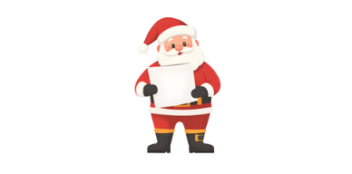
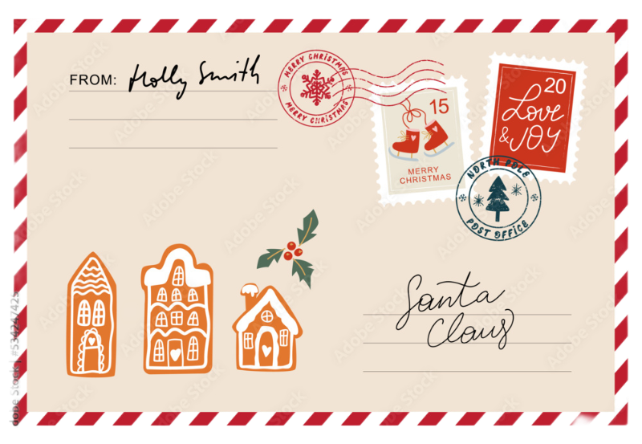

And What Would you like for Christmas?
Are you ready to write a letter to Santa? From toys you've been dreaming about to the little surprises you hope Santa might think up himself. Don't forget to take the Naughty or Nice Quiz to see if you've made it onto Santa's Nice List this year! There's a thrill in air as you sit down to write the perfect letter, hoping to catch Santa's eye and make this Christmas unforgettable.
Having a hard time thinking about what you want for Christmas? Here are some examples!
When you write your letter to Santa, think about the things that make you smile the most! Maybe there’s a toy you’ve been dreaming of, a book filled with adventures, or something that helps you be creative like crayons, Legos, or puzzles. Santa loves when children ask for things that bring them joy and help them learn, play, and share happiness with others. You can even ask for something special for your family or friends, because giving is one of the best parts of Christmas! Most of all, remember that Santa’s favorite gift is knowing you’re kind, thoughtful, and full of Christmas cheer.
As you write your wish-list, don't forget that Christmas is just as much about giving as it is getting. Think of all the people you love and are greatful for in your life and think of what you can give them to make their spirits bright this year.
Sit back and relax
Now sit back with a cup of hot cocoa and a classic Christmas movie,
and dream of the magic that Christmas morning will bring!
Here are a few of our favorites:
- "White Christmas"
- "Home Alone"
- "Elf"
- "The Polar Express"
- "A Charlie Brown Christmas"
Once you've written your letter, it's time to send it off to the North Pole! You can mail it to Santa Claus,
123 Elf Road, North Pole, 88888, or if you prefer, you can use the form below to send your letter electronically.
Just fill in your name, age, where you live, and what you'd like for Christmas, and click "Send to Santa".
Santa's elves will make sure your letter gets to him right away!

